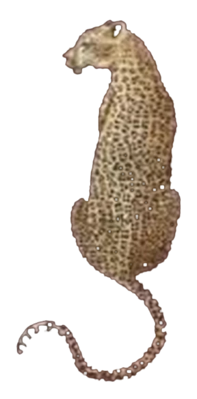

Web DeveloperFrontendDesign
Aytmuratova
Nukus · Karakalpakstan
Portfolio
Scroll
How I work
Approach
A little more than beautiful
01 · Character
I like design with character, where every detail has a reason to exist.
02 · Exploration
So I begin by exploring the idea, then experiment with form, typography, and motion.
03 · Realisation
I carry that vision through to a working website or application, where expression and usability feel equally considered.
The person behind it
About
What I create
- Websites & Landing PagesSites
- Web ApplicationsApps
- UI / Digital DesignInterface
- Brand Identity & Visual ConceptsIdentity
- Creative DevelopmentCode
Tools & technologies
AI development
Codex / Claude Code / Antigravity
Version control & design
GitHub / Figma
Integration & launch
APIs / AI agents / Deployment
Languages & frameworks
JavaScript / TypeScript / HTML / CSS / React / Next.js
Contact
Let’s make somethingthey can’t scroll past.
© 2026 Raykhan AytmuratovaNukus